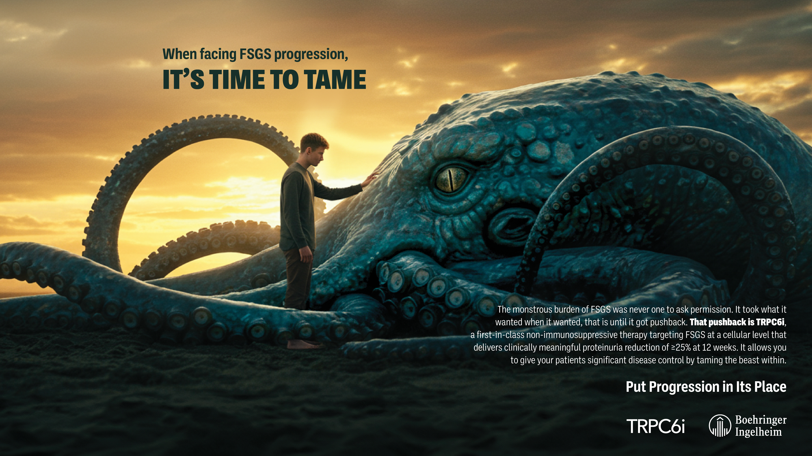
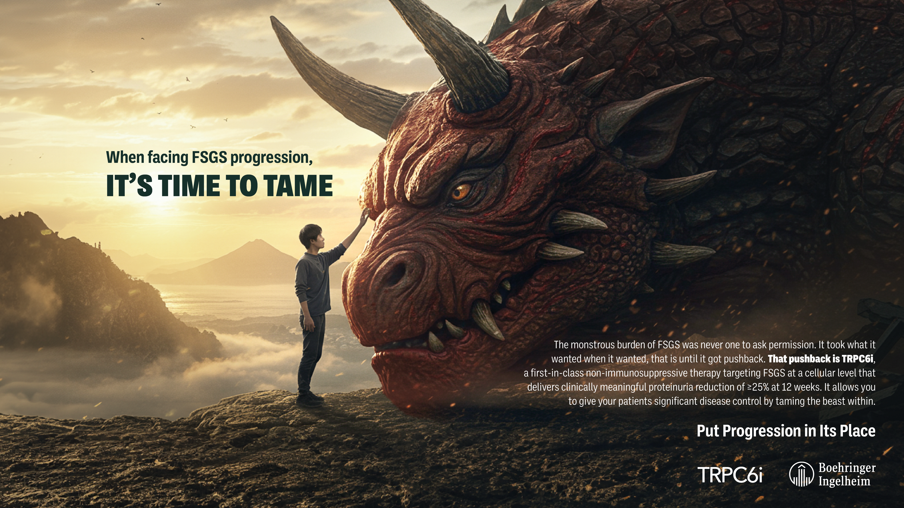

Boehringer Ingelheim FSGS & DMD Pitch Concepts
For clinicians treating rare, progressive diseases like FSGS and DMD, current options can slow decline but rarely change its course.
In this pitch, I explored how a first-in-class, non-immunosuppressive therapy could challenge progression at its source. The work was unified under the idea Dare to Disrupt Decline.
Two creative concepts were developed.
Tamed: This concept personified disease progression as a powerful force that has long dictated the limits of care.
Through cinematic storytelling, patients are shown confronting and taming mythic creatures—symbolizing a shift from fear and inevitability to control. The global visual system featured regionally tailored executions, including a dragon for the U.S., a Kraken for Europe, and an Oni-inspired creature for Japan.
Decline the Decline: This concept reframed progression as something that can be actively pursued and disrupted.
Clinicians are positioned as explorers, journeying into a stylized, microscopic kidney world to confront disease at its cellular source, challenging long-standing assumptions about inevitability.
Client: Boehringer Ingelheim


